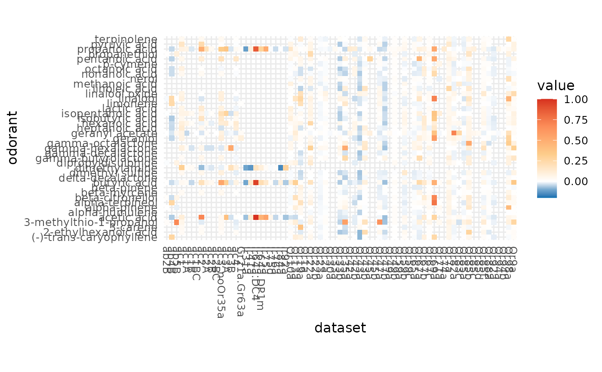
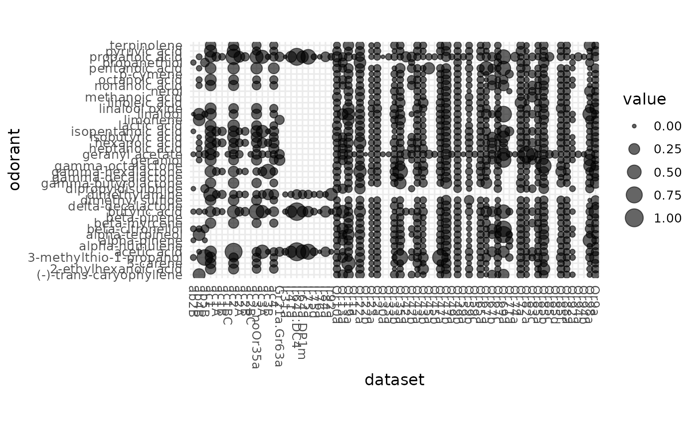

plot DoOR responses as a point matrix
dplot_response_matrix(data, odor_data = door_default_values("odor"), tag = door_default_values("tag"), colors = door_default_values("colors"), flip = FALSE, fix = TRUE, bw = FALSE, point = FALSE, limits, base_size = 12)
Arguments
| data | a subset of e.g. door_response_matrix |
|---|---|
| odor_data | data frame, contains the odorant information. |
| tag | the chemical identfier to plot (one of colnames(odor)) |
| colors | the colors to use if negative values are supplied (range of 5 colors, 2 for negative values, 1 for 0 and 3 for positive values) |
| flip | logical, if TRUE the x and y axes will be flipped |
| fix | logical, whether to fix the ratio of the tiles when plotting as a heatmap |
| bw | logical, whether to plot b&w or colored |
| point | logical, if |
| limits | the limits of the scale, will be calculated if not set |
| base_size | numeric, the base font size for the ggplot2 plot |
Value
a dotplot if limits[1] >= 0 or a heatmap if limits[1] < 0
Author
Daniel Münch <daniel.muench@uni-konstanz.de>
Examples
# load data library(DoOR.data) data(door_response_matrix) # reset the spontaneous firing rate to 0 tmp <- reset_sfr(door_response_matrix, "SFR") # plot heatmap / coloured tiles dplot_response_matrix(tmp[10:50,], tag = "Name", limits = range(tmp, na.rm = TRUE))#> Warning: Non Lab interpolation is deprecated
# plot dotplot dplot_response_matrix(door_response_matrix[10:50,], tag = "Name", limits = range(door_response_matrix, na.rm = TRUE))#>